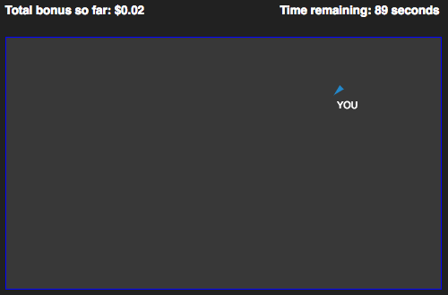
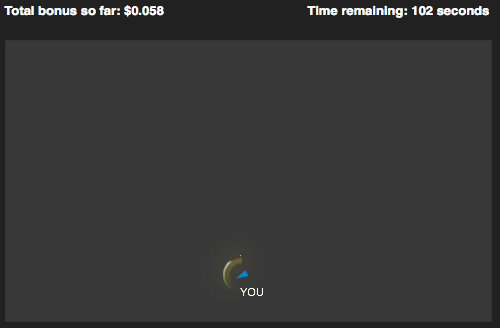

Instructions
Basics
The game you will play is a kind of digital easter egg hunt / hide and seek.
You will navigate your avatar through a rectangular playing area, possibly together with other players, as in this image:

At each point in time during the game, some regions of this area will be “magical bonus regions”.
When you are in a magical bonus region, your avatar will sparkle, as in this image:

The locations of the magical bonus region moves continuously over time from one point to another, as shown in the following video (you will not be able to view the moving area during gameplay). Hover over the video and press play to see it again:
Your goal is to maximize the amount of time you spend in magical bonus regions regions, i.e., to locate the regions where your avatar sparkles. You will receive "activity" points at all times you remain active in the game, but you will only receive "star" points in magical bonus regions.
You will only see sparkles on your own avatar, never on other avatars, even if they are in a magical bonus region, but the magical bonus regions are in the same places for everyone.
There is no competition between players; the magical region is not consumed by players. It simply changes location over time.
Payment, Bonuses, Etc.
Your monetary bonus will be based on both your star points and your activity points.
You will begin the game in a waiting room, where you may wait for other players. There are no magical regions in the waiting room.
IMPORTANT: If you exit the game window or are otherwise detected as inactive in the waiting room or in the game, you will be removed from the game and your HIT may not be approved. In order to remain active, you must stay off the walls in the game.
Players occasionally face bugs during gameplay. In the rare case that you think you are experiencing unexpected game behavior and you are not removed from the game automatically after a short time, please make a note of your URL (which contains information necessary to determine your bonus), take a screenshot if you know how to, and message the requester.
If you are experiencing inconvenience or discomfort, you may choose to disconnect from the game at any time. Disconnecting from the experiment may forfeit your star points, but not your activity points.
After the game ends, you will receive a survey code to submit with your HIT. You must submit the code exactly as shown to receive your bonus.